DIY: 10-channel DSP amp (Match UP 10DSP MK2) in a 2023 Model 3 RWD — no factory wires cut, and no low-voltage errors on wake-up [build log, parts 1–2]
DIY / ModsAudioLong postTL;DR
- Car: 2023 Model 3 RWD, base audio — no factory amplifier, no subwoofer, tweeters fitted but not wired.
- DSP amp: Match UP 10DSP MK2 (Audiotec Fischer), mounted on a carpeted plywood board in the rear quarter-panel cavity of the trunk, on three factory mounting points. Nothing cut or drilled.
- Power: from the penthouse (under the rear seat), fused. A 1 Ω / 100 W resistor limits the inrush current when the car wakes up; an 80 A solid-state relay then bypasses the resistor. Without this the car throws a string of electrical errors.
- Signal: a home-made T-harness that plugs in between factory connectors
X171,X175,X936andX053. Fully reversible. Pinout table below. - Status: wiring is essentially done; final assembly and DSP tuning are next.
Heads-up: this is a multi-part build and I don't know how many parts there will be. I work on it when I have free time, and there isn't much of that. This post combines the first two parts.
The plan
- Physically mount the processor somewhere solid
- Give it power
- Run wiring to the speakers and to the MCU audio signals
- Tune the DSP
Steps 1–3 are covered here. Step 4 will be its own post.
1. Mounting the DSP
My car has no factory amplifier and no subwoofer, so the cavity behind the trunk side trim (rear quarter panel) is empty. There's plenty of room and no trim needs to be cut.
I made a paper template of the space, cut the shape out of 10 mm plywood, wrapped it in automotive carpet, and hung it on perforated steel mounting strips from the hardware store. It attaches to three existing factory points. It holds very well, with no wobble or rattle.
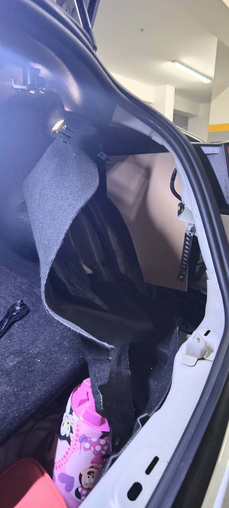
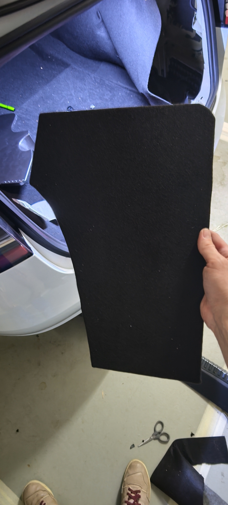
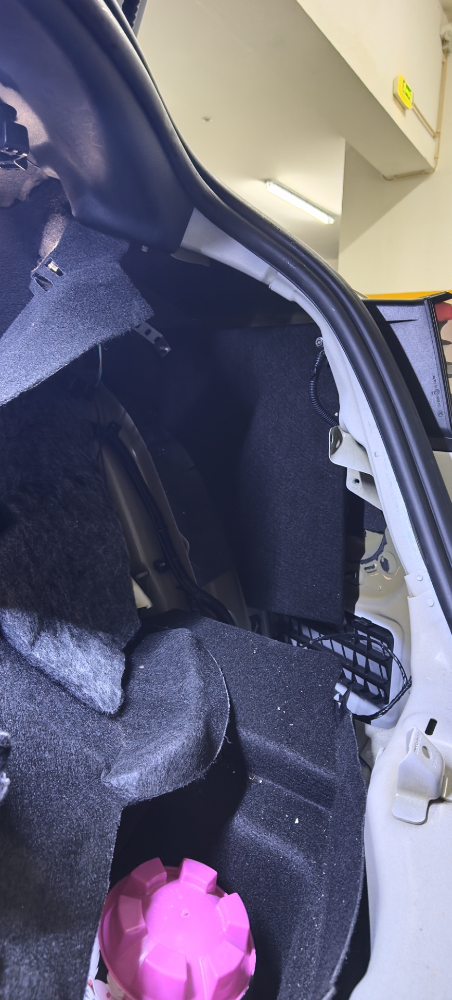
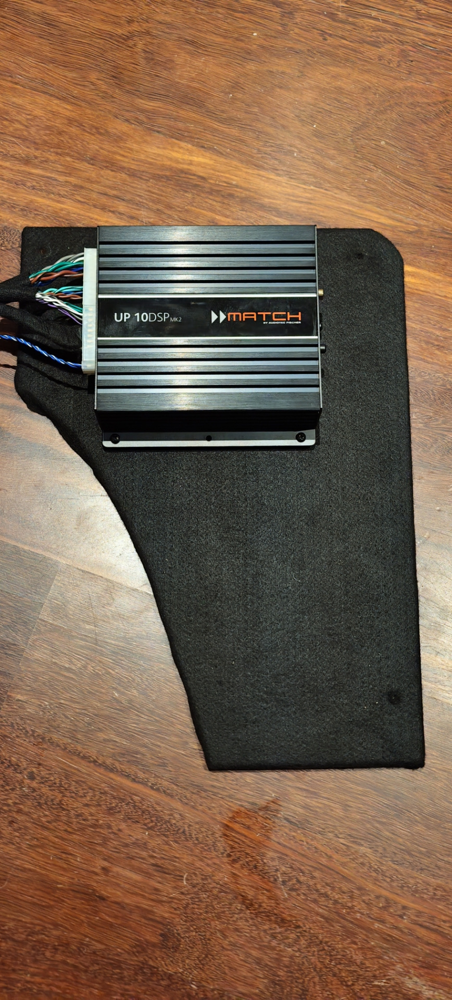
2. Power — and why Teslas need an inrush limiter
From everything I've read, the best place to take power is the penthouse (the power electronics under the rear seat, where the DC-DC converter output is). But there's a catch.
In a normal car an amplifier is connected to the battery once and stays connected forever. Here it hangs off the DC-DC converter output, and the car switches that off when it sleeps and back on when it wakes. The amp has fairly large input capacitors, and every time power comes back they charge with a big current spike. The car sees that spike, doesn't like it, and lights up a garland of errors.
Another owner describes the problem in more detail here: reddit.com/r/TeslaModel3/s/5W4ZJjgtSP
The fix: pre-charge resistor + bypass relay
- A 1 Ω, 100 W aluminium-housed resistor sits in series with the amp's +12 V. With 1 Ω in the way, the wake-up spike can't exceed roughly 15 A, and the capacitors charge gently.
- The amp can't run through the resistor permanently (at any real load the voltage would sag and the resistor would cook), so a solid-state relay (Heschen SSR-80DD, DC-switching, 80 A) is wired in parallel with the resistor. Once it closes, the resistor is shorted out and the amp gets full current.
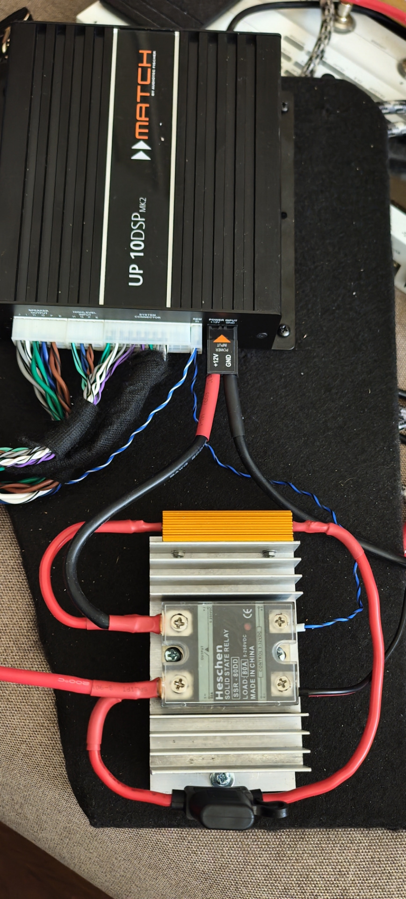
The heatsink under the relay is mostly insurance; it also happens to be a convenient thing to bolt everything to. I think it turned out pretty tidy.
Every terminal was crimped with a proper crimping tool and then soldered. Crimp-vs-solder is close to a religious argument; my experience says do both. All the parts came from Amazon or AliExpress.
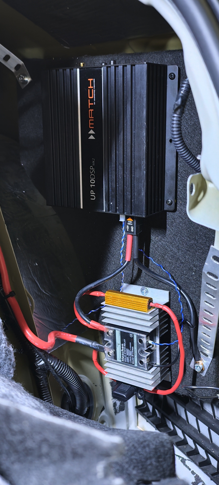
What triggers the relay
My first idea was to drive the relay from the amp's own Remote Out, so the amp would switch itself to full current once it was up. After thinking about it some more, I ran a separate wire from the 12 V socket circuit instead: it is only live when someone is in the car, which is exactly when I want the amp on full power.
The convenient place to pick it up is connector X930 at the rear of the centre console. I already had an adapter plugged in there, so no splicing.
Cable routing
The thick power cable and the audio harness lie neatly next to the factory loom: under the rear seat backrest, then along the right-hand sill.
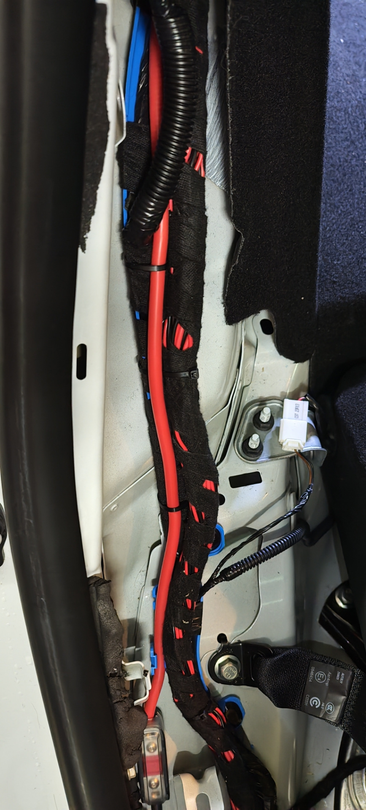
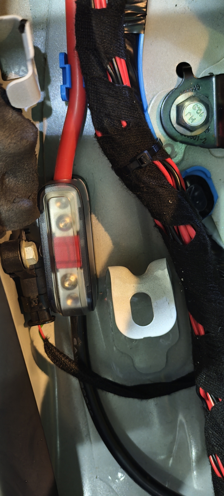
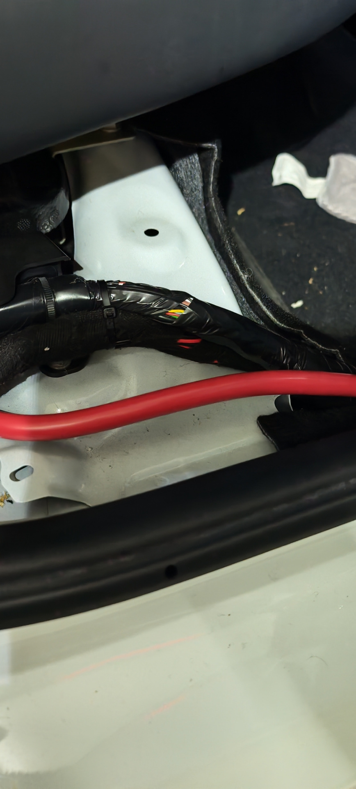
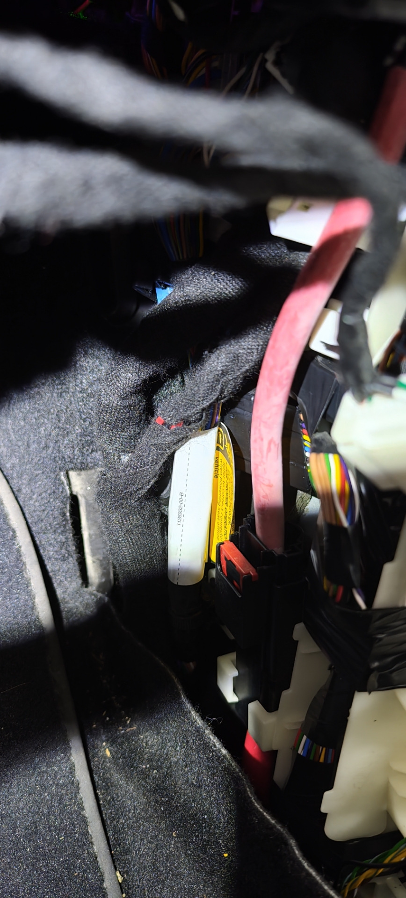
Two things worth doing: wrap everything in cloth (fleece) harness tape so nothing buzzes against the body, and twist every audio pair.
3. Signal harness — no cutting
A huge stroke of luck: all the wiring diagrams are published at service.tesla.com. No probing with a multimeter, no piecing things together from forum fragments.
There are four connectors where the signals I need are easiest to reach:
X171andX175— plug straight into the MCU (the car computer's built-in amplifier outputs).X936— in the sill; left-side speakers.X053— right front door connector; right-side speakers.
On base-audio cars the tweeters are physically installed but not driven. Their wiring dead-ends at the door connector X053 and the sill connector X936, which is why those two are in the list: the DSP feeds the tweeters from there.
Where the connectors came from
I didn't want to cut the factory wiring, so I ordered two Chinese “speaker activation” harnesses made for different revisions of the car — one comes with X171 plugs, the other with X175. That was the quick and cheap route, because I couldn't find the mating half of X175 for sale anywhere. I suspect it doesn't exist as a catalogue part and the Chinese vendors tool their own.
The same two harnesses also donated the male/female pairs for the X936 and X053 taps, so all four T-connectors come from them and nothing had to be sourced separately.
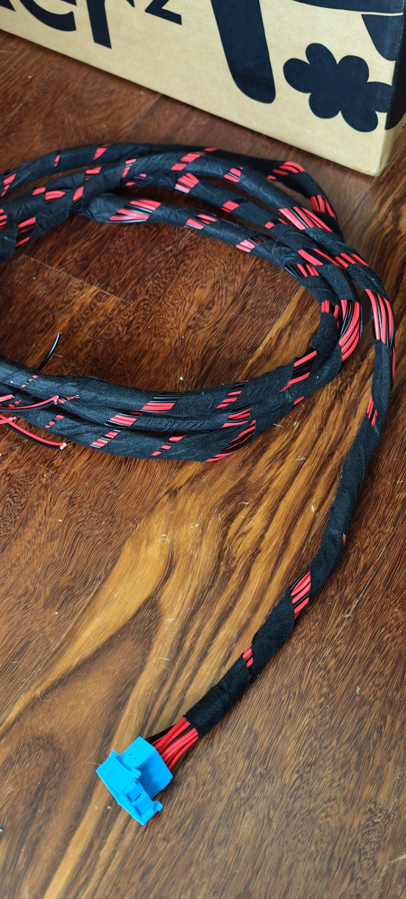
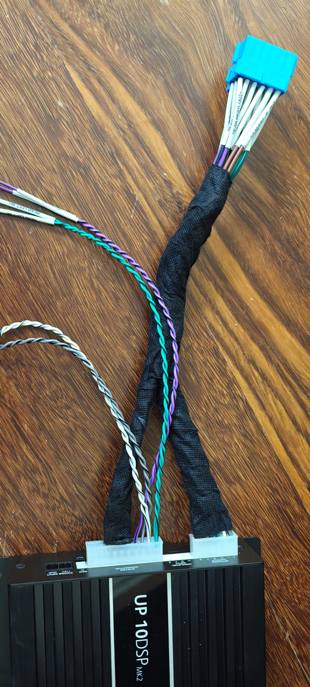
How it's laid out
Each tap is a male/female pair that goes in between a factory plug and its socket. The amplifier outputs from the MCU are intercepted and sent to the DSP inputs (green); the DSP outputs go back out toward the speakers (red).
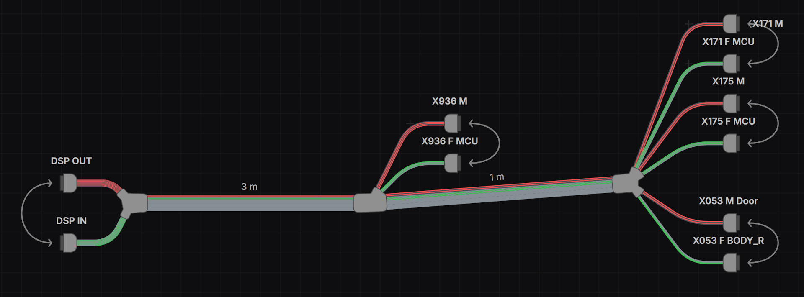
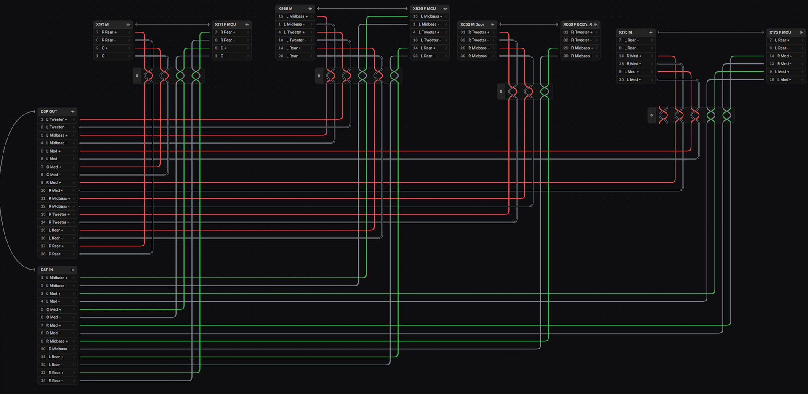
Pinout (2023 Model 3 RWD, base audio — verify against the diagrams for your VIN)
| Connector | Pins (+ / −) | Channel | DSP input (from MCU) | DSP output (to speaker) |
|---|---|---|---|---|
X171 (MCU) | 7 / 8 | Right rear | ✓ | ✓ |
| 2 / 1 | Centre | ✓ | ✓ | |
X175 (MCU) | 7 / 8 | Left rear | not tapped here — left rear is taken at X936 | |
| 14 / 13 | Right dash midrange | ✓ | ✓ | |
| 9 / 10 | Left dash midrange | ✓ | ✓ | |
X936 (sill) | 15 / 1 | Left door midbass | ✓ | ✓ |
| 4 / 18 | Left tweeter | — (no factory signal) | ✓ | |
| 14 / 26 | Left rear | ✓ | ✓ | |
X053 (right door) | 29 / 30 | Right door midbass | ✓ | ✓ |
| 31 / 32 | Right tweeter | — (no factory signal) | ✓ | |
That adds up to 7 high-level inputs (L/R midbass, L/C/R dash, L/R rear) and 9 amplified outputs (the same seven plus two tweeters), so nine of the amp's ten channels are used and the tweeters finally get their own channels with their own crossover and time alignment.
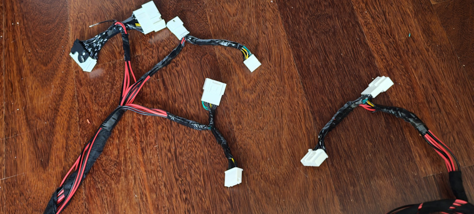
The test fit showed I'd missed the length by half a metre — on the long side. Well, too long beats too short :) There's plenty of space next to the processor to coil the slack.
DSP end of the harness
My plan is to end the harness in two separate connectors, inputs and outputs. Plug them into each other and the DSP is bypassed completely (car back to stock sound, handy for troubleshooting or service visits); it also lets me disconnect the outputs on their own.
The connector I ordered for that still hasn't arrived, so I've nearly made peace with buying loose pins and populating the DSP's own plug directly — it's an ordinary Molex. Amazon promises the pins tomorrow.
Parts list
| Part | Notes |
|---|---|
| Match UP 10DSP MK2 | 10-channel amplifier with built-in DSP, high-level inputs |
| 10 mm plywood + automotive carpet | Mounting board, cut from a paper template |
| Perforated steel mounting strip | Hangs the board on 3 factory points |
| 1 Ω 100 W aluminium-housed resistor | Inrush (pre-charge) limiter |
| Heschen SSR-80DD solid-state relay + heatsink | DC-switching, 80 A; bypasses the resistor |
| Fuse holders ×2 | One near the penthouse, one inline at the power module |
| Power and ground cable, ring terminals, heat-shrink | Crimped and soldered |
| 2 × “speaker activation” harnesses | Donors for all four T-connector pairs: X171, X175, X936 and X053 (two different car revisions) |
| Speaker wire, cloth harness tape, zip ties | All audio pairs twisted |
| Molex pins for the DSP plug | On the way |
What's next
That's pretty much it for the wiring. What's left is to put everything together for good, and then the fun part: tuning. I'll post that as a follow-up.
Happy to answer questions about the harness or the power module in the comments.